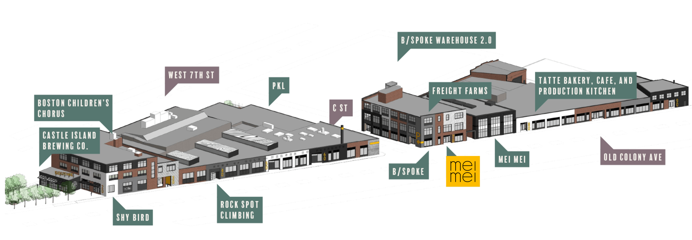

It has a brewery vibe and is a space where you can take a factory tour to see how our dumplings are made, enjoy a meal at the cafe, and take cooking classes with friends and family.
Saturday, Jan 21, 2023: Grand Opening
Opening Hours starting Jan 26, 2023: Thursday - Saturday: 12pm - 6pm
Opening Hours starting Feb 21, 2023: Wednesday - Saturday: 12pm - 6pm
Designed by Katelyn Lipton @katelyn.leeann.art
Each arch represents a different step in making dumplings. The middle arch shows farm fresh ingredients getting folded into dumplings. The left arch shows the cooking process. Dumplings are steamed in a bamboo steamer and pan-fried over the flames. The right arch shows plated dumplings served with a sauce, ready to eat!